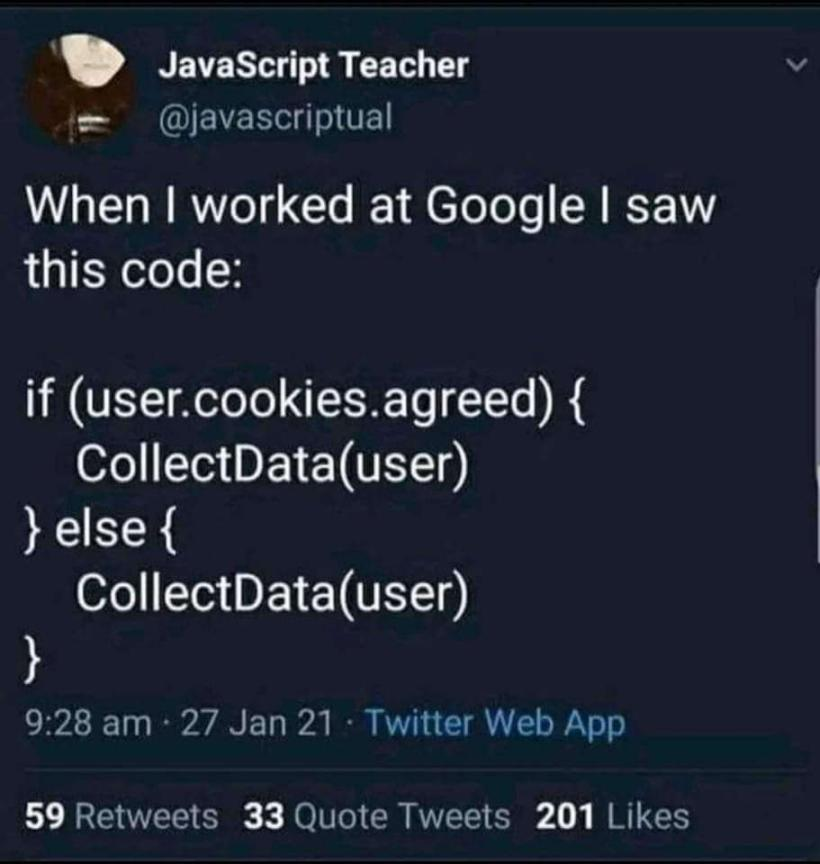
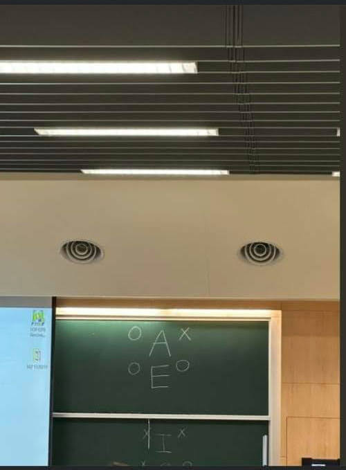
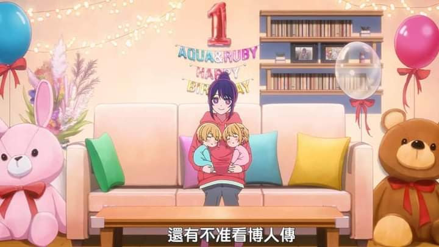
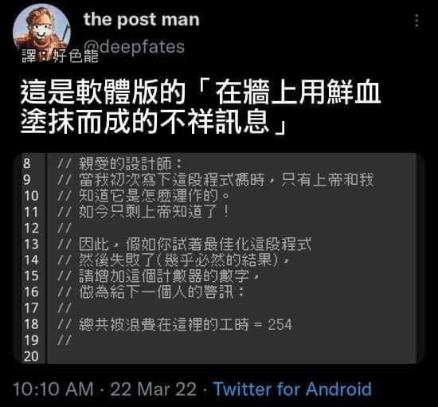

那些路過的 me 因們
First Post:
Last Update:
Word Count: 109
Read Time: 1min
Last Update:
Word Count: 109
Read Time: 1min
註記
以下迷因不代表本台立場XD
若你有好的迷因歡迎提供！可能不全都是迷因，只是好笑的東西 (?)

Source: Twitter@javascriptual
Source: Twitter@TheProgrammerMe & 好色龍

Source: 資料科學家的工作日常
Source: IG@two.steps1011

Source: FB - 路觀 / 台大博雅

Source: 我推的孩子 / FB - 動漫本部 2.0

Source: Twitter@deepfates & 好色龍

Source: FB - 不會冷 (貼文)